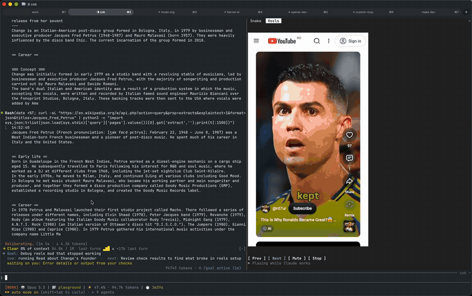

reels
YouTube Shorts in a terminal pane: plays while Claude works, pauses when Claude is done.

Install
claude plugin marketplace add hamzafer/claude-code-mods
claude plugin install reels@claude-code-modsRestart Claude Code after installing. To try it without installing, clone the repo and run claude --plugin-dir mods/reels.
How to use
/reels- Starts it
/reels login- Opens a YouTube window to accept cookies or sign in
j / k- Next and previous
m- Mute
x- Stop
How it behaves
- Installing it changes nothing until you type /reels.
- stop turns it off again.